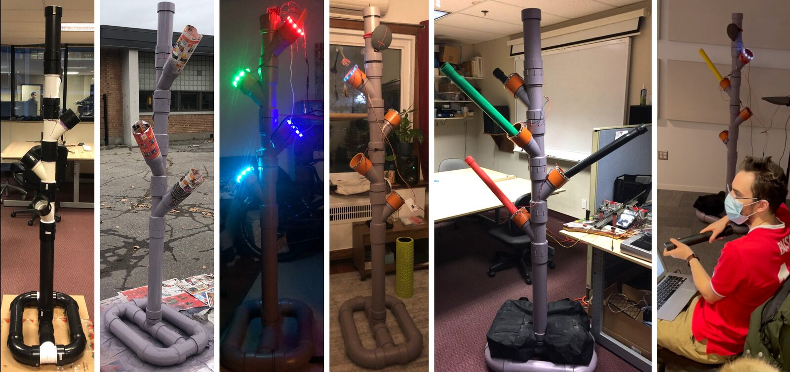
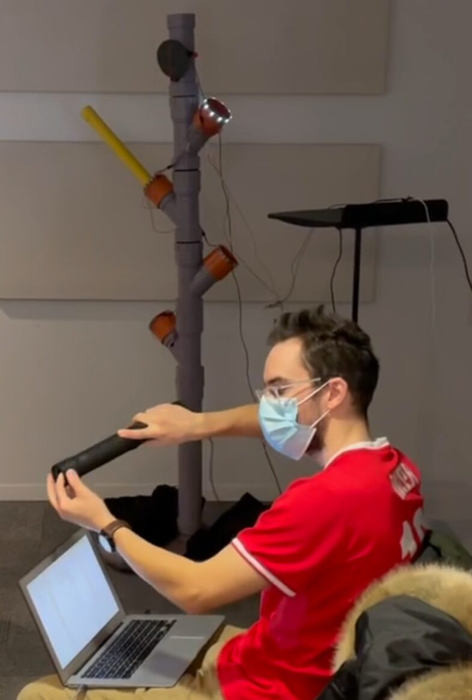
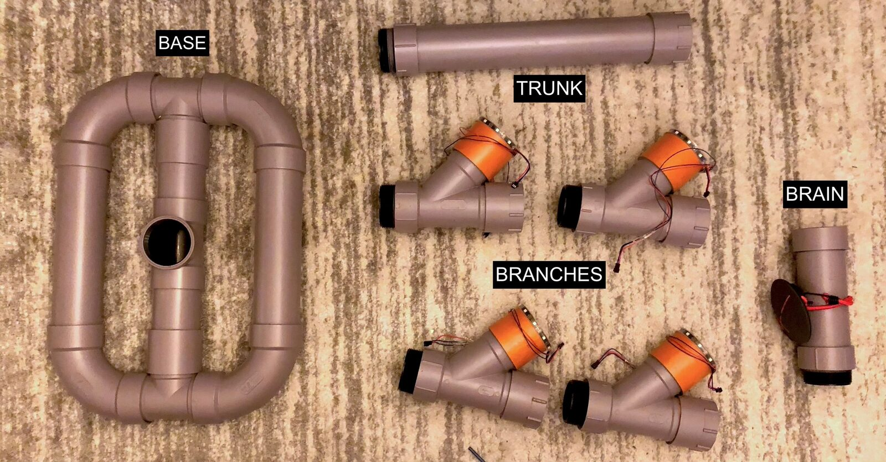
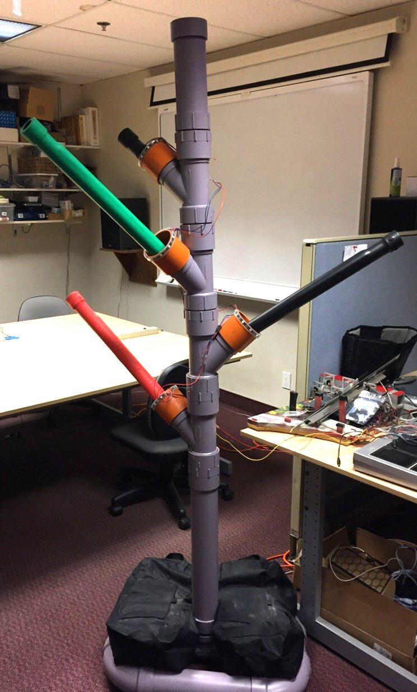

Introducing the t-Tree: Using Multiple t-Sticks for Performance and Installation
AbstracT
The authors introduce and document how to build the t-Tree, a digital musical instrument (DMI), interactive music system (IMS), hub, and docking station that embeds several t-Sticks. The t-Tree’s potential for collaborative performance as well as an installation is discussed. Specific design choices and inspiration for the t-Tree are explored. Finally, a prototype is developed and showcased that attempts to meet the authors’ goals of creating a novel musical experience for musicians and non-musicians alike, expanding on the premise of the original t-Stick, and mitigating technical obsolescence of DMIs.
Author Keywords
gestural controller, DMI, digital musical instrument, design
documentation, hub, IMS, interactive music system, t-stick, t-tree
CCS Concepts
•Applied computing →Sound and music computing; Perform-
ing arts; •General and reference →Design; •Human-centered
computing →Sound-based input / output.


Stages of t-Tree development from left to right: assembling the basic structure of the t-Tree, spray-painting the t-Tree, adding lights to the Branches, the fully assembled t-Tree, the t-Tree fully loaded with t-Sticks, demonstrating the t-Tree.
Introduction
For digital musical instruments (DMIs) [1] to achieve comparable longevity as their acoustic brethren, it is imperative to develop and expand their range of communal practice. Though hundreds of DMIs have been proposed in the last several decades, only a few of them are available for performers who want to experiment with new forms of musical expression. Indeed, as pointed out by Ferguson and Wanderley in [2], “The current scene is peppered with unique and fascinating digital instruments with a performer base of one.”
Several factors inherent to DMIs limit their widespread use. DMIs typically use of a variety of computing devices to produce sounds. Most often, they rely on personal computers whose hardware and software become rapidly outdated [3]. Similarly, input devices with various versions developed over the years might not share exactly the same features and might rely on specific software (for mapping and sound synthesis) that is incompatible with other versions of the device [4]. Protocols, standards, and transport methods may also change over time. There is a clear need to create strategies to overcome this process of obsolescence if one wants to develop musical practice over time [5].
We attempted to iterate on the design of a gestural controller called the “t-Stick” by creating a device we term the “t-Tree.” The t-Tree can function as a DMI, an Interactive Music System (IMS) [6], a hub, and a docking station.
For our purposes, we use the term digital musical instrument as defined in [1] to mean “an instrument that contains a control surface (also referred to as a gestural or performance controller, an input device, or a hardware interface) and a sound generation unit.” We use the term interactive music system as defined in [6] to mean “a system that responds with music to input from a non-expert human participant without requiring assistance from a non-participatory human.”
With the t-Tree, we attempt to lower the barrier to entry for those new to the t-Stick. We also seek to mitigate its obsolescence. Several versions of the t-Stick [4] can be connected and recognized by the t-Tree with no configuration from the user, allowing t-Stick performers to immediately interact with one another in spontaneous individual or collaborative performances [7]. We hope that our work in reducing obsolescence and lowering barriers to use of the t-Stick can serve as a useful model for other creators of NIMEs to increase the accessibility and longevity of their instruments.
Motivation
The t-Stick is a family of gestural controllers with numerous sensors [8]. It has been the object of an attempt to develop a robust community around a DMI [9]. While there have been dozens of works and performers using many versions of the t-Stick, these works and performers are heterogenous and disconnected in place and time. We wished to create a collaborative interface that connects t-Sticks (and their players) both literally and metaphorically.
The t-Tree is a multipurpose device that can function as a DMI, an IMS, a hub, and a docking station. These different modalities of operation serve to meet our goals of lowering the barrier to entry and reducing obsolescence of the t-Stick. The following section explains these four modalities and how the t-Tree functions within each of them.
Modalities
DMI
The t-Tree can function as a DMI that embeds multiple t-Sticks (up to four at the time of writing). When multiple t-Sticks are connected to the t-Tree, they respond not only to the individual input of each performer, but cross-modulate one another to create audiovisual output that would not be possible with four individual t-Sticks. Thus, it can function as a complex, multi-performer DMI, with the ability for composers to create many-to-many mappings.


Performing using the t-Tree.
We believe that the t-Tree expands upon the creative potential of the t-Stick and furthers its goal of developing a family of instruments where “success would mean that a prospective performer could quickly and easily begin to make sense of the interface, using only their experience of the physical world.” [8]. By allowing multiple t-Sticks to play together and cross-modulate, the t-Tree expands upon this idea without requiring additional setup from the end user.
Interactive Music System (IMS)
Without the t-Tree, setup must be performed before a user is able to receive sonic output from the t-Stick. The user must:
Connect the t-Stick to a network,
Create a patch that utilizes the stream of data provided by the t-Stick, i.e., define a mapping layer,
Run the patch on a computer connected to the same network as the t-Stick, and
Connect the computer’s DAC to a speaker.
While these steps allow for flexibility in setup and mappings [10], we wished to lower these barriers to entry for the t-Stick. To this end, the t-Tree automatically recognizes and begins producing sound from any t-Sticks that are connected to it. Furthermore, our prototype has a predefined mapping layer and sound generator, allowing for instant sonic output. We also added LED lights to the t-Tree, both to inspire curiosity in would-be users and to provide additional visual feedback.
In [11], Wu and Bryan-Kinns found that novice users who were motivated experientially had greater creative engagement with a novel musical interface. We attempt to motivate users experientially through both the physical design and immediacy of our device. The t-Tree also extends the metaphor of the t-Stick as an arboreal structure: it stands at around two meters in height and displays its t-Stick branches, accompanied by gently pulsing lights.
A “Hub” for Collaboration
The League of Automatic Music Composers (1978-1983) was one of the first groups to use computers to link instruments together in what they called a “microcomputer network band” [12]. After the League disbanded, several of the members, along with a few other digital musicians, teamed up to form the Hub, another “interactive computer network music group” [13].
We wish to metaphorically extend the idea of a “hub” in our creation of the t-Tree, by creating something that:
Uses technology as a literal bridge between devices,
Is a central point around which activity takes place, and
Creates a space for collaboration.
It is our hope that the t-Tree will afford a more robust communal practice around the t-Stick, allowing both expert performers and novices alike to participate in musical practice with the instrument.
The idea of a “hub” for music is not new, but there continues to be a need for such spaces for musicians to collaborate meaningfully.1 It is our desire that the t-Tree be used as a “hub” itself, by creating a space for t-Stick-based performance and sonic exploration.
A docking station
As previously mentioned, DMIs are often subject to technical obsolescence due to changing protocols, standards, and operating systems [3]. The t-Tree serves as a “docking station” for both current and older t-Sticks, automatically detecting the firmware of the t-Stick and allowing different versions of the instrument to produce sound.
The older t-Sticks in IDMIL—the lab in which they were created—depend on protocols and software that have become more difficult to obtain and use. It is our hope that the t-Tree will allow them to continue to be used and not thrown away or disassembled for parts.
Goals for the t-Tree
Lowering the barrier to entry
The t-Stick is an extremely sensor-rich device, with an IMU, capacitive sensing, a piezoelectric sensor, and force-sensitive resistor all available as input parameters to the user. Although this flexibility can allow for incredibly nuanced control, it also increases the cognitive load on the end user [14]. By shifting the burden of patch creation, hardware selection, and mapping to the t-Tree, we allow anyone to begin playing the t-Stick immediately.
The concept of “comprovisation” encompasses the balance between composed and improvised elements with regards to electronic musical performance [15]. The t-Tree allows for a wide range of comprovisation strategies, making it flexible for both new users and experienced DMI creators.
Taking inspiration from the Dato DUO,2 we painted the t-Tree in bright colors and rigged it with individually-addressable LED rings that react to the user’s gestures with embedded t-Sticks. These LEDs also draw users to the t-Tree by gently pulsing when it is not in use. Finally, our prototype features sound design that is pleasing and lush, no matter the input from the user. These design choices serve to encourage users to participate in the t-Tree from experiential, rather than purpose-oriented motivations, which has been shown to foster greater creative engagement [11].
By serving as a hub around which activity takes place, we want the t-Tree to draw new users into the communal practice of the t-Stick. As an installation piece, it can passively generate interest with passersby and invite them to take part in a novel experience. By creating an environment for musical collaboration, we can also create the potential for social bonding between performers [16].
Reducing technological obsolescence
The t-Stick, having been created over 15 years ago, has gone through many revisions. In these revisions, the communications protocol, firmware, transport method, and form factor of the t-Stick have changed. Many patches that were written for older t-Sticks no longer function. The problem of changing standards and technological obsolescence is not unique to the t-Stick, but it does provide an illustrative case study.
The t-Tree, by having different t-Stick protocols programmed in its firmware, can automatically recognize and communicate with different versions of the t-Stick. This makes usage of older t-Sticks much easier and more viable, and allows them to be used again, rather than thrown away or disassembled.
We hope the t-Tree can serve as a model for building a platform to support older DMIs as they age. The t-Tree communicates over a number of different transport protocols, including serial, WiFi, and Bluetooth, making it fairly robust to future changes in communication standards. Of course, it will need to be updated if a successor to these transport methods becomes widely adopted, but having an existing platform will make it easier to develop new software.
Structure


The different structural components of the t-Tree.
Hardware
The t-Tree is segmented into four main categories of components: Brain, Trunk, Base, and Branches (see Figure 3).
The Brain comprises the electronics of the t-Tree, including the Raspberry Pi, circuit board, USB hub, and speaker. The Trunk is a section of ABS pipe that adds height to the t-Tree and to enhances the tree metaphor of the structure. The Base stabilizes the t-Tree. The Branches hold and connect to t-Sticks and have a strip of individually addressable LEDs around them.
The modular design of the t-Tree (in which all structural pieces screw together) allows the user flexible control of the appearance of the t-Tree. We based this design on artificial Christmas trees, which are relatively lightweight, sturdy when assembled, aesthetically pleasing to look at, and able to be stored compactly.
We chose to use plumbing pipe and fittings because they are lightweight, sturdy, and relatively cheap. Due to limited availability, we used a combination of ABS and PVC piping, though we anticipate substitutions would not affect the tree’s robustness. We designed the base to be small and stable, and reinforced it with a two weight bags filled with 30 kilograms of gravel, 15 kilograms per bag. While the base could be filled with gravel directly, the bulkiness of the base could hinder portability.
The t-Tree features visual feedback as well as sonic. We chose the WS2812 Integrated Light Source, informally known as “NeoPixels,” for its wide availability, individually addressable lights, and relatively low cost [17].
We designed the t-Tree to be as cheap and as reproducible as possible and documented our work as thoroughly as possible within this paper and the t-Tree GitHub. We planned our design before buying materials and so nothing went to waste. We were also able to borrow and recycle several components.
See the t-Tree GitHub linked in Appendix A for a complete breakdown of materials used for the structure of the t-Tree and a labeled visual of the assembled components, as well as other construction details.
Software
We wanted the t-Sticks to be distinguishable yet complementary in performance. For one example patch on our prototype, we implemented a soundscape that uses two wavetable synthesizers, one playing a “pad” and the other playing a bass. The notes are algorithmically generated and quantized in pitch space to a C major pentatonic scale to create pleasant-sounding harmony no matter the input. The majority of input parameters for each t-Stick are mapped to synthesis parameters for the corresponding instrument, but a select few are cross-modulated, leading to a greater sense of creative intimacy between performers.
The t-Tree code is written in Python 3. For current-generation t-Sticks, the t-Tree currently uses OSC data sent over a WiFi network broadcast by the Raspberry Pi 4. For older t-Sticks, the transport protocol is OSC over a serial connection.
See the t-Tree GitHub linked in Appendix A for the complete codebase.
Discussion


The fully assembled t-Tree, without speaker. One t-Stick is docked within each Branch.
We set out to lower the barrier to entry and reduce obsolescence of the t-Stick. To this end, we designed the t-Tree to have four modalities: DMI, IMS, hub, and docking station.
As a DMI, the t-Tree extends the musical capabilities of the t-Stick by affording and encouraging cross-modulation and treating multiple t-Sticks as a single instrument. Expanding the communal practice possibilities of the t-Stick can be considered a key aspect of reducing obsolescence, as a vibrant and evolving community is a key aspect of an instrument’s longevity [4].
As an interactive music system, the t-Tree allows novice users to participate in musical creation without necessitating complex setup. The design choices to make the physical structure colorful, inviting, and illuminated make the t-Tree approachable for people who have no experience with DMIs. We also designed the t-Tree to support experiential participation by integrating audiovisual feedback and allowing for instant sound generation.
For its use as a hub, the t-Tree joins together t-Sticks and their performers both literally and metaphorically. It also represents a step forward for communal practice, as its physical presence can encourage people to pick up a t-Stick and play. Creating a more robust community of performers is key to ensuring the instrument’s longevity. Furthermore, by creating an explicit space for collaborative t-Stick performance, the t-Tree encourages t-Stick players to learn from one another, which in turn can lower the barrier to entry for newer players.
Finally, the t-Tree functions as a docking station, allowing both new and old t-Sticks to be used. We intend to keep the t-Tree backwards compatible as new versions of the t-Stick are introduced. By updating the t-Stick and t-Tree at the same time, we mitigate the technological obsolescence that accompanies a heterogeneous computing environment for DMIs.
Future Development
We have plans to continue working on the t-Tree in order to make it easier to use and to add more features, such as:
Allowing t-Sticks to update their firmware via the t-Tree,
Using the GuitarAMI Sound Processing Unit [18] as the embedded processor to further standardize the sound generation in the t-Tree, and
Implementing libmapper [19] as a means to map input parameters to synthesis parameters and LED colors/intensities.
In addition, we would like to perform a user evaluation study with different axes of research performed along the four modalities outlined above. For participants in the study, we would like to include both expert performers of the t-Stick and novices.
Conclusions
In its current iteration the t-Tree serves a number of roles, with room for more in the future. In its role as a DMI, IMS, hub, and docking station, it was our goal to lower the barrier of entry to users of the t-Stick and reduce the technological obsolescence that is endemic in DMI lifecycles.
To that end, we believe that the t-Tree is a good start for these goals. It entices new users of the t-Stick into communal practice and allows them to begin playing immediately. Both new and old t-Sticks can be used with the t-Tree, and as t-Stick designs continue to change, the t-Tree will serve as a platform that supports their usage. Finally, it allows multiple t-Sticks to be used as a single complex DMI.
While painting the t-Tree in a parking lot, many community members noticed what we were making. As the t-Tree became more and more colorful, the reactions shifted from wariness to curiosity and several people asked if we were building a sculpture. We told them it was “kind of like a sculpture but for making music,” and their interest was piqued; each group stopped in turn and chatted with us for several minutes. They wanted to know more and many told us about their own creative endeavors.
From this, we know that the design of the t-Tree is interesting to people who have no prior experience with DMIs. We hope that our current prototype can inspire further curiosity and look forward to testing it out in a public communal space.
Acknowledgments
The authors would like to thank Edu Meneses for his support and guidance in designing and building the t-Tree. Thank you also to Travis West and Charlie Reimer for their comments and suggestions. Finally, thank you to Brady Boettcher for his help demonstrating the functionality of the t-Tree.
Ethics Statement
The authors report no ethical issues connected to this research. No human or animal subjects were involved in this research and there exist no conflicts of interest.
Appendix A: Further Documentation
t-Tree Video Demonstration
https://github.com/IDMIL/T-Tree/wiki/Videos
t-Tree GitHub
https://github.com/IDMIL/T-Tree
t-Stick GitHub
https://github.com/IDMIL/T-Stick
Footnotes
Citations
- ↩Miranda, E. R., & Wanderley, M. (2006). New Digital Musical Instruments: Control And Interaction Beyond the Keyboard (Computer Music and Digital Audio Series). A-R Editions, Inc.
Ferguson, S., Wanderley, M. M. (2010). The McGill Digital Orchestra: An Interdisciplinary Project on Digital Musical Instruments. Journal of Interdisciplinary Music Studies.
↩- ↩Franco, I., & Wanderley, M. M. (2017). Prynth: A Framework for Self-contained Digital Music Instruments. In M. Aramaki, R. Kronland-Martinet, & S. Ystad (Eds.), Bridging People and Sound (pp. 357–370). Springer International Publishing.
- ↩Nieva, A., Wang, J., Malloch, J., & Wanderley, M. (2018). The T-Stick: Maintaining a 12 year-old Digital Musical Instrument. Proceedings of the International Conference on New Interfaces for Musical Expression, 198–199. https://doi.org/10.5281/zenodo.1302545
- ↩McPherson, A. P., & Kim, Y. E. (2012). The Problem of the Second Performer: Building a Community Around an Augmented Piano. Computer Music Journal, 36(4), 10–27. http://www.jstor.org/stable/41819545
- ↩Murray-Browne, T. (2012). Interactive music: Balancing creative freedom with musical development. [PhD Thesis]. Queen Mary University of London.
- ↩Miranda, E. R., & Wanderley, M. (2006). New Digital Musical Instruments: Control And Interaction Beyond the Keyboard (Computer Music and Digital Audio Series). A-R Editions, Inc.
- ↩Murray-Browne, T. (2012). Interactive music: Balancing creative freedom with musical development. [PhD Thesis]. Queen Mary University of London.
- ↩Nieva, A., Wang, J., Malloch, J., & Wanderley, M. (2018). The T-Stick: Maintaining a 12 year-old Digital Musical Instrument. Proceedings of the International Conference on New Interfaces for Musical Expression, 198–199. https://doi.org/10.5281/zenodo.1302545
- ↩Schnell, N., & Battier, M. (2002, May). Introducing Composed Instruments, Technical and Musicological Implications. 2002 Conference on New Instruments for Musical Expression (NIME-02).
- ↩Malloch, J., & Wanderley, M. M. (2007). The T-Stick: From musical interface to musical instrument. Proceedings of the 7th International Conference on New Interfaces for Musical Expression - NIME ’07, 66. https://doi.org/10.1145/1279740.1279751
- ↩Fukuda, T., Meneses, E., West, T., & Wanderley, M. M. (2021, April 29). The T-Stick Music Creation Project: An approach to building a creative community around a DMI. NIME 2021. https://doi.org/10.21428/92fbeb44.26f33210
- ↩Malloch, J., & Wanderley, M. M. (2007). The T-Stick: From musical interface to musical instrument. Proceedings of the 7th International Conference on New Interfaces for Musical Expression - NIME ’07, 66. https://doi.org/10.1145/1279740.1279751
- ↩West, T. (2020). Making mappings: examining the design process with libmapper and the T-Stick [Phdthesis, McGill University]. https://escholarship.mcgill.ca/concern/theses/8049g942q
- ↩Wu, Y., & Bryan-Kinns, N. (2019). Musicking with an interactive musical system: The effects of task motivation and user interface mode on non-musicians’ creative engagement. International Journal of Human-Computer Studies, 122, 61–77. https://doi.org/https://doi.org/10.1016/j.ijhcs.2018.07.009
- ↩Boutwell, B. (2009). The League of Automatic Music Composers, 1978–1983. With John Bischoff, Jim Horton, Tim Perkis, David Behrman, Paul DeMarinis, and Rich Gold. New World Records 80671-2, 2007. Journal of the Society for American Music, 3(2), 263–264. https://doi.org/10.1017/S1752196309091147
- ↩Gresham-Lancaster, S. (1998). The Aesthetics and History of the Hub: The Effects of Changing Technology on Network Computer Music. Leonardo Music Journal, 8, 39–44. http://www.jstor.org/stable/1513398
- ↩Franco, I., & Wanderley, M. M. (2017). Prynth: A Framework for Self-contained Digital Music Instruments. In M. Aramaki, R. Kronland-Martinet, & S. Ystad (Eds.), Bridging People and Sound (pp. 357–370). Springer International Publishing.
- ↩Whitenton, K. (2013). Minimize Cognitive Load to Maximize Usability. In Nielsen Norman Group. https://www.nngroup.com/articles/minimize-cognitive-load/
- ↩Dudas, R. (2010). “Comprovisation”: The Various Facets of Composed Improvisation within Interactive Performance Systems. Leonardo Music Journal, 20, 29–31. http://www.jstor.org/stable/40926370
- ↩Wu, Y., & Bryan-Kinns, N. (2019). Musicking with an interactive musical system: The effects of task motivation and user interface mode on non-musicians’ creative engagement. International Journal of Human-Computer Studies, 122, 61–77. https://doi.org/https://doi.org/10.1016/j.ijhcs.2018.07.009
- ↩Tarr, B., Launay, J., & Dunbar, R. I. M. (2014). Music and social bonding: “self-other” merging and neurohormonal mechanisms. Frontiers in Psychology, 5(1096). https://doi.org/10.3389/fpsyg.2014.01096
- ↩Burgess, P. (2013). Adafruit NeoPixel überguide. In Adafruit. https://learn.adafruit.com/adafruit-neopixel-uberguide
- ↩Nieva, A., Wang, J., Malloch, J., & Wanderley, M. (2018). The T-Stick: Maintaining a 12 year-old Digital Musical Instrument. Proceedings of the International Conference on New Interfaces for Musical Expression, 198–199. https://doi.org/10.5281/zenodo.1302545
- ↩Meneses, E., Wang, J., Freire, S., & Wanderley, M. M. (2019). A comparison of open-source linux frameworks for an augmented musical instrument implementation. NIME, 222–227.
- ↩Malloch, J., Sinclair, S., & Wanderley, M. M. (2015). Distributed tools for interactive design of heterogeneous signal networks. Multimedia Tools and Applications, 74(15), 5683–5707. https://doi.org/10.1007/s11042-014-1878-5